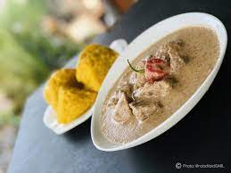
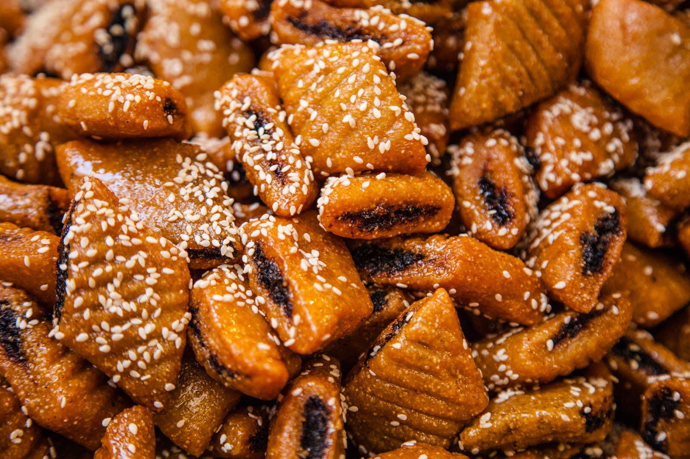
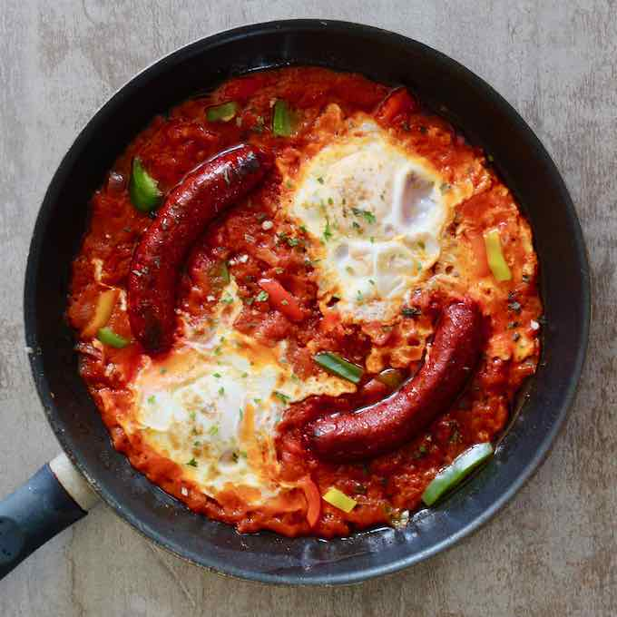
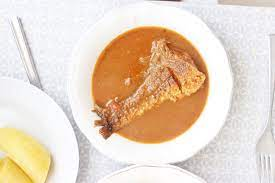
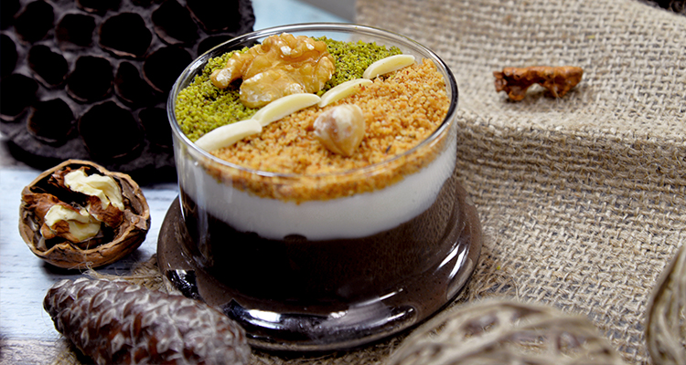
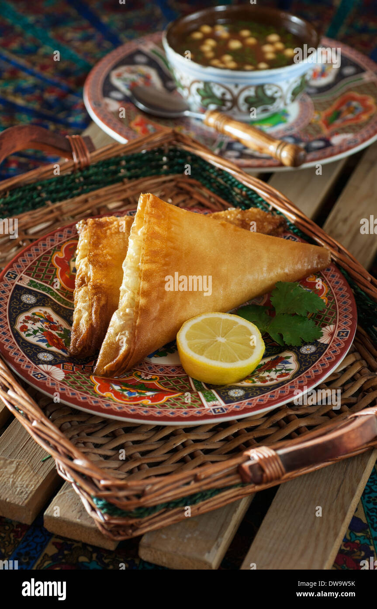
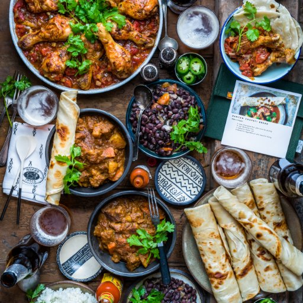
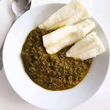

sꚢups
sweets
5-ingredients
 spicy
spicy
+ view all ꚢur recipes

Tunisian cuisine is a fusion of Mediterranean, African, and Arabic flavors. It features fresh ingredients such as olive oil, spices, lemon, and harissa, a chili pepper paste. Popular dishes include couscous, brik (a fried pastry filled with tuna or eggs), and shakshuka (a dish of eggs baked in a flavorful tomato sauce). Tunisian sweets, such as baklava and chewits, are also well-known and enjoyed for their sweet, flaky, and nutty flavors.
lunches
Sꚢups
 Deserts
 easy
Meal prep
Veggie
 Vegan
Spice it up
"Discover the diverse & delicious flavors of African cuisine: a harmonious blend of traditional recipes & exotic spices."